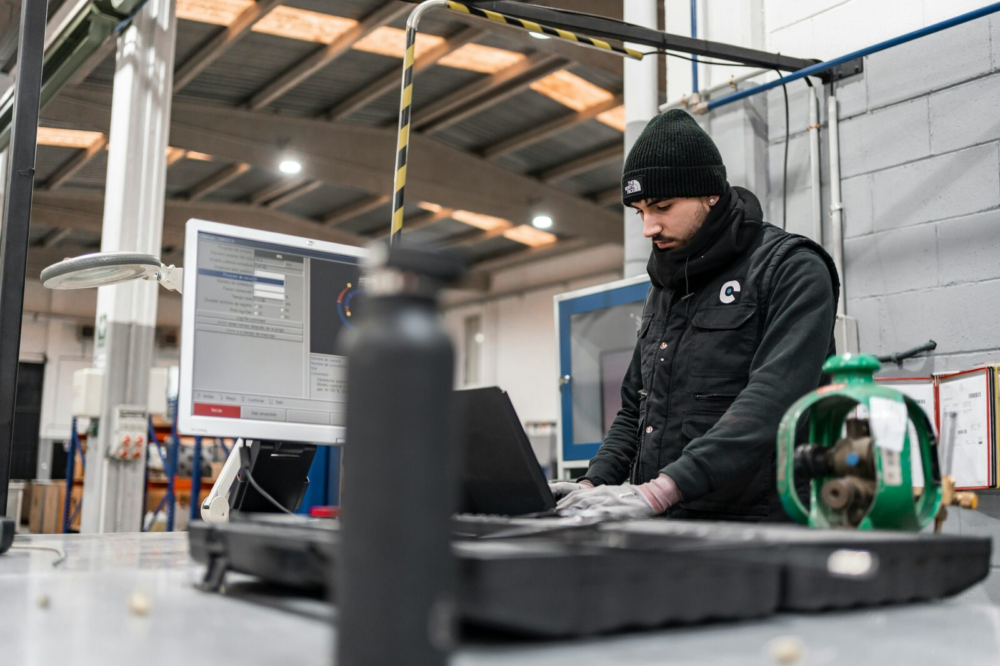

Two Doors Into the Same Occupation.
How to design Registered Apprenticeship for the AI delta — for sponsors, intermediaries, state apprenticeship agencies, workforce boards, and employer L&D leaders.

The signal is clear by now. The Department of Labor's AI in Registered Apprenticeship Innovation Portal, the AI Literacy Framework, the national AI Skills in Registered Apprenticeship contract, and the DOL–NSF memorandum aligning their workforce systems all point the same direction: AI training belongs inside the formal workforce system, and Registered Apprenticeship is the structure being asked to carry it.
The harder question is what good looks like once that signal becomes a design problem. This piece is for the people who will actually answer it — sponsors, intermediaries, state apprenticeship agencies, workforce boards, and employer L&D leaders. The argument is narrow on purpose: there is a working method, it has a real-world example, and it produces a federally credentialed pathway with two doors into the same occupation.
The design problem
Most AI training treats each worker as a separate training subject. The DOL guidance opens a different unit: the occupation itself.
The occupation is the unit of redesign.
The shift sounds small. It is not. When the occupation is the unit of redesign, four things change at once:
- One curriculum gets designed, not many.
- A federal credential sits at the end, not a course certificate.
- The same standard applies to an incumbent worker and a new entrant.
- The work that AI changes is in the role, not in the person.
That last one matters most. AI does not change individual workers in some abstract way. It changes specific tasks inside specific occupations — what gets automated, what gets augmented, what gets newly created. The right place to design the response is at the level where the change is actually happening.
The rest of the operating model follows from this reframe.
The Reshape process
The clearest articulation of how to do occupation-level redesign comes from Alden Stout, Vice President of Academic Affairs at Newman University, in his working paper AI Change Management: A Practitioner Framework for Redesigning Work. The framework has eight stages; the one that matters for apprenticeship design is the fifth, which Stout calls Reshape. It has four steps:
- Deconstruct the occupation into the tasks that actually comprise daily work.
- Reallocate — identify what AI can automate, what AI can augment, and what requires irreducible human judgment.
- Redesign roles — define what each position looks like with AI integrated.
- Redistribute capacity — direct recovered time and attention toward higher-value work.
Newman tested this on its registrar's office. A 0.5 FTE role was redesigned, not eliminated. The team decomposed the work into discrete tasks, identified which could be augmented by AI, redistributed responsibilities across the unit, and rebalanced workload. Processing time for routine enrollment tasks dropped 30 to 40 percent in the first sprint cycle. The recovered human time went toward student advising and exception handling — the parts of the work that require judgment, empathy, and contextual understanding.
This was a capacity reallocation, not a headcount reduction.
The critical point about the registrar pilot, and the principle worth carrying into any redesign: the role did not disappear. It was restructured around what humans do that AI cannot.
That distinction protects the model. Redesign that quietly aims at displacement collapses trust inside the workforce within one cycle. Redesign that visibly aims at capacity reallocation builds the trust the next cycle needs.
Two doors into the same occupation
Once the occupation is redesigned, register it as a new AI-enabled standard or update an existing one. Now there are two pathways into the same federal credential.
Door one: new entrants. The full integrated pathway. Base occupational competence and AI-enabled work taught together, because there is no longer a clean version of the job that exists without AI in it.
Door two: incumbent workers. Advanced standing for the base occupational competencies they already have. Focused training and credentialing on the AI delta only — the difference between the job as it was and the job as it now is.
The mechanism that makes this clean and legal is competency-based or hybrid apprenticeship design. DOL permits sponsors to grant advanced standing based on prior experience, OJL competency demonstration, or both, as long as the policy is objective, applied uniformly, documented, and tied to commensurate wages for any progression step granted. This is not an exception. It is in the standard guidance.
Same federal standard. Two entry points. One credential.
An accountant with fifteen years of experience and a new graduate from a community college accounting program walk through different doors and end up with the same DOL-recognized competency record in AI-enabled accounting work.
Worked example: the AI-enabled accountant
Take a real occupation through the model.
The AI-Enabled Accountant
An accountant already understands financial reporting, month-end close, reconciliations, compliance, budgeting, and audit support. None of that goes away.
What changes is everything that touches the production layer of the work: how documents get reviewed, how data gets categorized, how variance gets analyzed, how reports get drafted, how outputs get verified.
AI literacy and responsible AI use. Data protection and governance. Prompting for accounting workflows. AI-assisted financial research and documentation. AI output verification and audit trails. Critical thinking, communication, and decision-making with AI in the loop.
Use approved AI tools to draft variance narratives. Summarize financial documents and supporting materials. Assist with reconciliation review and anomaly detection. Analyze budget-to-actual trends. Draft internal reports with human verification. Document AI-assisted workflows and validation steps.
Supervisor verification. Work samples. AI use documentation. A capstone workflow improvement project. Demonstrated productivity, quality, or cycle-time improvement. Evaluation of responsible use, accuracy checking, and human judgment.
A new entrant runs the full twelve-month pathway, learning base accounting competencies and AI-enabled work together. An incumbent accountant receives advanced standing for documented base competencies and completes a focused pathway on the AI delta — typically three to six months, depending on prior exposure. Both finish with the same credential.
That is what occupation-level redesign looks like in one industry.
Worked example: the AI-enabled advanced manufacturing technician
The same model, a completely different industry. This is where the framework proves it generalizes.
The AI-Enabled Advanced Manufacturing Technician
An advanced manufacturing technician already understands mechanical systems, electrical fundamentals, basic process control, machine operation, and shop safety. None of that goes away.
AI is reshaping how the floor actually runs. Predictive maintenance is replacing time-based maintenance. AI-driven vision systems are augmenting quality inspection. Production scheduling is moving toward continuous optimization rather than weekly plans. Safety documentation, exception reporting, and root-cause analysis are increasingly AI-assisted.
AI literacy and responsible use. Data and predictive analytics fundamentals. Working with AI-driven quality control systems. Interpreting predictive maintenance signals. AI in production planning and scheduling. Safety and human oversight in AI-augmented manufacturing.
Operate AI-driven quality inspection equipment. Interpret predictive maintenance alerts and execute corresponding action. Use AI-assisted production scheduling tools. Document AI-augmented procedures and exceptions. Apply human judgment to AI recommendations on the floor — particularly on safety-critical and quality-critical decisions.
Supervisor verification. Production data demonstrating quality, uptime, or efficiency gains. Documented response protocols. A capstone improvement project. Evidence of sound human judgment in AI-augmented decisions.
A new entrant runs the full pathway, combining traditional manufacturing competencies with AI-augmented work. An incumbent journeyman receives advanced standing for the mechanical, electrical, and process competencies and trains on the AI delta — predictive systems, automated quality, data interpretation, AI-augmented workflows. Both finish with the same credential.
Same Reshape process. Same two-door structure. Different industry. The framework is the framework.
What this requires from the system
A working operating model is not the same as a working ecosystem. For this to actually run at scale, five pieces have to align.
Sponsors willing to update occupation standards. Either modify existing Registered Apprenticeship standards to add AI tasks to OJL and AI literacy or occupation-specific AI training to RTI, or build new AI-enabled standards from scratch. National intermediaries that have filed AI-related Registered Apprenticeship programs include Apprenti, BuildWithin, and others; more are coming as the federal AI Skills in RA contract award lands.
Employers committed to genuine OJL. AI delta training cannot be classroom-only. The OJL component is where workers practice on real workflows, get supervised, get corrected, and produce documented evidence of competency. Employers who treat OJL as paperwork will produce credentials that do not mean anything.
State apprenticeship agencies and DOL OA processing on the thirty-day clock. The March 2026 guidance committed DOL to thirty-day registration determinations with a public timeline tracker. State agencies have new latitude and new accountability under the same guidance. Speed of approval is now part of whether the model works at scale.
Mentorship that does not fully exist yet. Traditional apprenticeship works because journeymen teach apprentices.
AI-enabled work has no journeyman yet.
Nobody has done the job in its new form long enough to be the master. The first cohort in any AI-enabled occupation will be writing the standard operating procedures as they go, often in cross-functional teams that share a workflow. Sponsors need to design for this honestly: structured peer learning, supervisor documentation, and explicit space for the first cohort to author what later cohorts will inherit.
Funding alignment. Workforce Pell for short-term related instruction goes live July 1, 2026. State Apprenticeship Expansion Formula funding (SAEF4) closes June 18. Pay-for-Performance per-apprentice payments are expected to land in summer 2026. The American Manufacturing Apprenticeship Incentive Fund is already deployable. The financing is aligning faster than most organizations are aware.
Bottom line
The DOL guidance is permissive. The funding is aligning. The credential is recognized. The mechanism — competency-based design with advanced standing — already exists in the standard playbook. The four-step Reshape process has been tested in at least one real institution with documented outcomes.
What is missing is not regulatory authority. It is operating discipline: sponsors and employers willing to deconstruct occupations, reallocate work, redesign roles, and run the first cohort through real workflows where the standard operating procedures still have to be written.
The federal apprenticeship system is open for AI-enabled work. The question is no longer whether it can be done. It is whether organizations are willing to do the design work that makes it real.
Notes and sources
DOL AI in Registered Apprenticeship Innovation Portal. DOL announcement, April 29, 2026. AI in Registered Apprenticeship portal. AI Skills and Literacy in Registered Apprenticeship.
DOL–NSF memorandum on AI workforce alignment. DOL–NSF joint AI workforce announcement, April 2026. NSF TechAccess: AI-Ready America. NSF TechAccess solicitation.
Workforce Pell Grants. Effective July 1, 2026, under the Working Families Tax Cuts Act. Department of Education proposed rules announcement. 20 U.S.C. § 1088, Cornell Legal Information Institute.
Reshape framework and the Newman University registrar pilot. Alden Stout, Vice President of Academic Affairs at Newman University, AI Change Management: A Practitioner Framework for Redesigning Work, working paper. Cited with permission; available on request from Newman University.
Apprenti and NC State's AI Academy. NC State College of Education, "AI Academy, Apprenti to Partner on AI Registered Apprenticeship Program", September 16, 2025.
Advanced standing in Registered Apprenticeship. See DOL Office of Apprenticeship guidance on competency-based and hybrid apprenticeship standards. DOL permits sponsors to grant advanced standing based on prior experience, OJL competency demonstration, or both, as long as the policy is objective, applied uniformly, documented, and tied to commensurate wages for any progression step granted.
Building something that needs the layers connected?
Start with a strategic brief, or invite Tonya to speak.